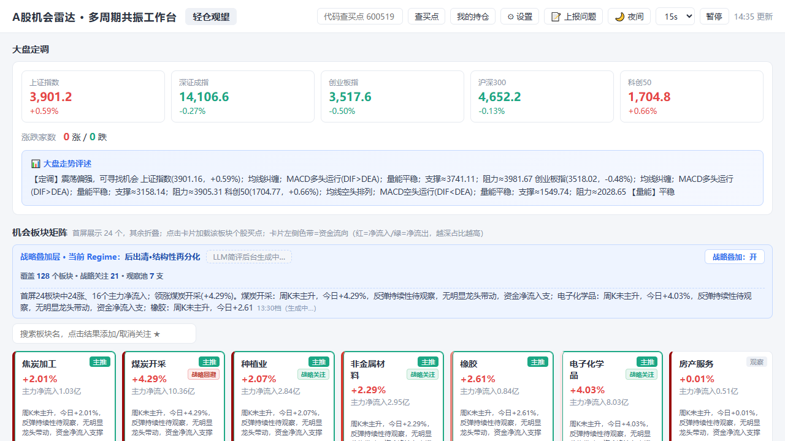
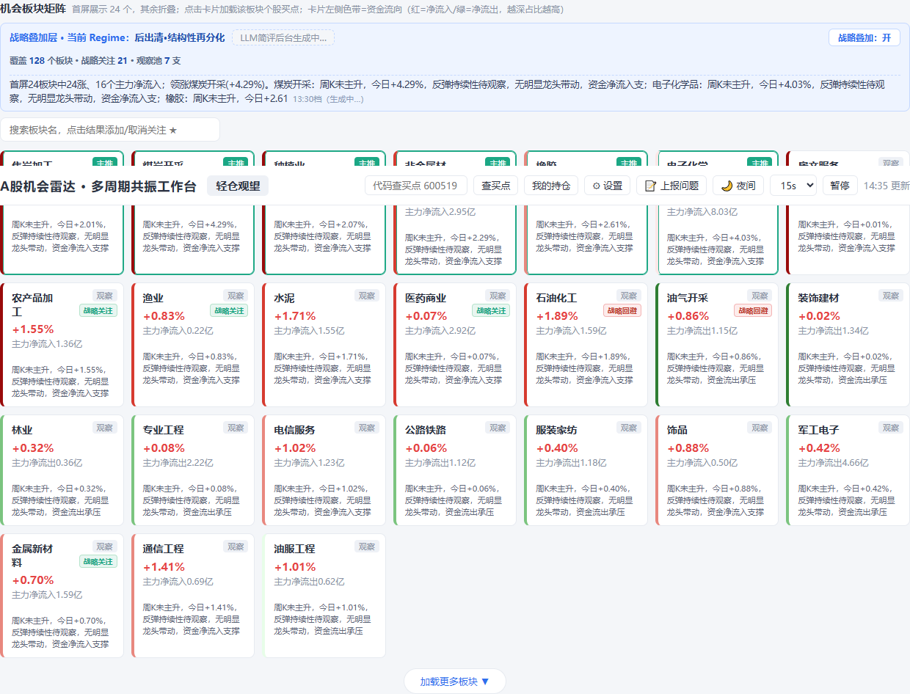
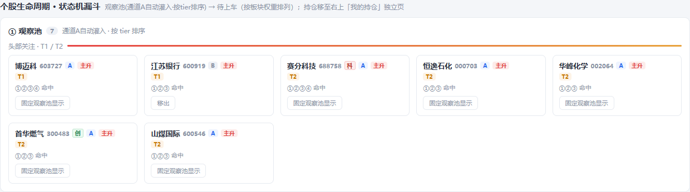
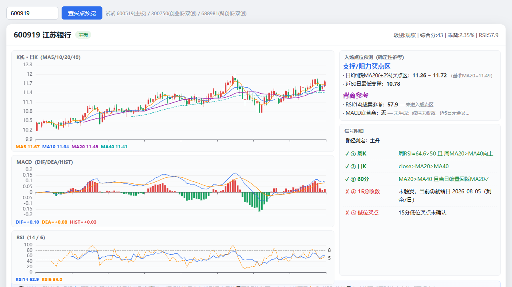
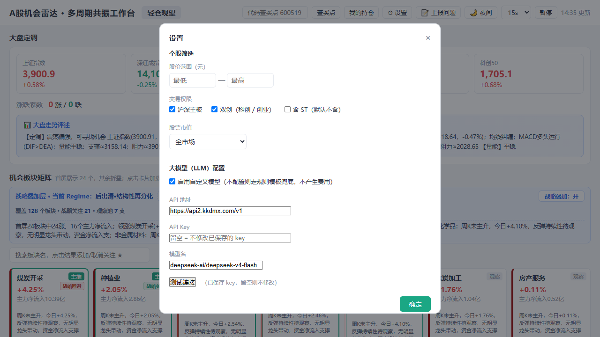

A股机会雷达 · 简单版使用说明
会认字就能看懂。目标：让你知道这软件是干什么的、能点哪里、点了会怎样。
一、这是什么 & 有什么用
A股机会雷达是一个选股辅助工具。它每天帮你扫描 A 股 5000+ 只股票，找出符合「多周期共振」条件的板块和个股。
你可以把它理解成一个「过滤器」：
- 先看大盘情绪 → 再看哪些板块有钱在进 → 再在这些板块里找符合条件的个股。
- 它不会替你做交易决策，只负责把「可能有机会」的标的挑出来，并告诉你为什么被挑出来。

首页一览：顶部是大盘指数和评述，中间是板块矩阵，下方是个股生命周期 / 观察池。
本地运行
- 安装 Python 3.12+，按
README_分发版.md 创建 .venv 并安装依赖。
- macOS 双击
start.command，其他平台运行 .venv/bin/python server.py。
- 浏览器打开
http://127.0.0.1:5000/，就能用了。
服务默认只监听本机 127.0.0.1；云部署请参考 Dockerfile 和 README 的云部署说明。
必备支持工具
- Windows 电脑（Win10 及以上）
- 网络：行情数据来自公开服务器，主源是通达信行情服务器；备用源为新浪 / 腾讯 / 东方财富。
- 浏览器：Chrome / Edge / Firefox 等现代浏览器。
没有 API Key，哪些功能会受影响？
点右上角 ⚙ 设置，可以看到「大模型」配置区。这里填你自己的 endpoint + key。
| 功能 | 不填 key | 填了自己的 key |
|---|
| 大盘 / 板块 / 个股行情数据 | 正常 | 正常 |
| 个股买点（含公告分析 / 买点简述） | 走规则模板兜底 | 调用真实大模型生成 |
| 观察池 / 持仓管理（星标） | 正常 | 正常 |
| 板块简评 / 战略总览 | 走规则模板兜底，界面标注「模拟」 | 调用真实大模型生成 |
| 费用 | 不产生任何费用 | 按你自己的 key 计费 |
分发版默认设了 APANEL_LLM_MOCK=1，不配置也能用；只有「个股买点里的 AI 解读」和「板块简评」会走规则模拟。其余行情、观察池、星标持仓全部正常。
二、功能拆解
整体流程：行情数据 → 计算板块强弱 → 命中共振条件的票进观察池 → 触发买卖点 → 点开看个股详情。
2.1 板块矩阵：先看方向
首页中间的「机会板块矩阵」是第一步。它把 A 股板块按资金流入、涨幅、共振强度排出来。
- 主推 / 主升：板块整体处于上升趋势。
- 战略关注 / 战略回避：程序对板块的偏好提示。
- 左侧色带：红=资金净流入，绿=净流出，颜色越深占比越高。
- 点击任意卡片：下方「个股买点」区域会加载该板块内符合共振条件的个股。

点击板块卡片，下方会展示该板块的个股买点列表。
2.2 观察池：候选票都在这里
程序会自动把符合条件的股票放进「个股生命周期 · 状态机漏斗」。
- 观察池：命中多周期共振条件（如 ①②③ 等）但还没到上车时机的票。
- 待上车：④已就绪且⑤触发 / 当日直接合并命中，符合更严格的入场条件。
- T1 / T2：关注度分级。T1 优先级更高。
- 固定观察池显示：合并池里的票点这个按钮，可以固定进观察池显示。
- 星标 ☆/★：每张卡片/个股行左上角都有星标。点击 ☆ 加入「我的持仓」；已加入的显示 ★，再点一下取消。

每张卡片显示代码、名称、命中条件、趋势状态和可操作按钮。
2.3 个股面板：看一只票的详细信号
点击观察池里的任意卡片，或在顶部搜索框输入代码（如 600919）点「查买点」，会打开个股面板。
这里能看到：
- 实时行情、MA5、MACD 等基础指标。
- 信号明细：什么时候命中了哪些条件（①②③④⑤）。
- 信号检查项：为什么现在被列出来（如 MA20 金叉 MA40、周 RSI 站上 50、60 分钟 MACD 金叉等），一行行打勾/打叉。
- 支撑 / 阻力买点区、背离参考：技术面给出的价格区间和背离提示。
- 风险复检：ST、流动性、涨幅过大等风险提示。
- AI 买点简述（仅配置了 API key 时生成）：用大模型把上面信号写成一段人话。未配置时不显示。
注意：个股面板本身不直接喊"买"或"卖"，它只把信号列出来。实际卖点提醒出现在你星标持仓后的「我的持仓」弹窗里（如跌破 MA20、RSI 超买、硬止损等）。

个股面板是决策的最后一环，所有信号都会落到具体规则上。
2.4 设置面板：换模型、调筛选
点右上角 ⚙ 设置。
- 筛选：价格范围、板块（主板 / 双创）、是否含 ST、市值大小。
- 大模型：endpoint / key / model。不填就走路径模板。
- 保存：点「保存设置」后生效。

核心结论：不填 key 也能完整使用选股、观察池、星标持仓功能；只有「个股买点的 AI 简述」和「板块简评」会从真实生成变成规则模拟。
三、数据来源 & 回测
行情接口
- 主源：通达信公共行情服务器（无需账号，直连）。
- 备用源：新浪、腾讯、东方财富公开接口。
- 公告 / 新闻：巨潮网（证监会旗下公开源）。
如果通达信连不上，板块矩阵和个股计算会受影响；程序会自动尝试备用源，但稳定性不如主源。
回测结果
策略在 2024-01-01 至 2026 年的历史数据上跑过回测，按多周期共振入场、双路径卖点离场：
- 样本数：867 笔交易
- 胜率：43.1%
- 单笔平均收益：+0.93%
- 盈亏比：1.38
- 平均持仓天数：16.3 天
历史回测不代表未来收益，仅供验证规则有效性。详细交易明细可在源码目录 backtest_report/ 中查看。
关于端口
本地运行时服务默认只监听 127.0.0.1:5000，不对外网开放。
云部署时通过 APANEL_HOST=0.0.0.0 和 PORT 交给平台入口监听。
四、遇到问题
右上角有 📝 上报问题 按钮。点一下会：
- 自动采集诊断信息（版本号、操作系统、最近报错、时间戳）并复制到剪贴板。
- 自动打开问题反馈收集表。
你只需把剪贴板内容粘贴进表单描述框，点提交即可。反馈直达作者，不经中转。
常见问题：网络差导致板块加载慢、LLM 网关失效（简评显示模拟）、某个股票详情打不开。
本程序仅供学习研究，不构成投资建议。